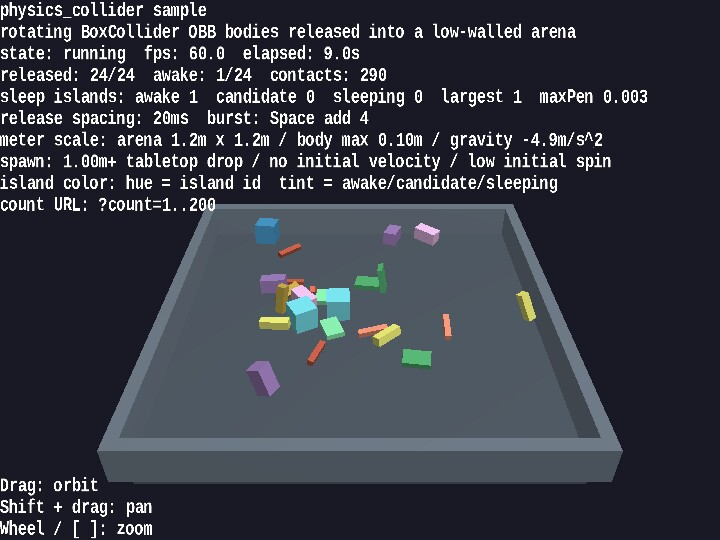

physics_collider
English | 日本語

Overview
- This sample lets you inspect multiple bodies with
BoxCollideras they fall while rotating, contact each other in midair or on the floor, push against each other, and gradually settle - It uses
WebgAppto collect startup, HUD, input, and camera control, while the physics world itself is built directly fromPhysicsSpaceandPhysicsNode, making the implementation easier to trace - Assuming
1 unit = 1 m, it drops boxes of up to about0.10 minto a shallow1.2 m x 1.2 marena, so the behavior can be observed at the scale of dropping small tabletop objects - By mixing not only cubes but also beams, plates, columns, and deep blocks, the sample makes it easier to compare OBB orientation changes, edge contacts, face contacts, and the appearance of sleep islands
- Pressing
Spaceinjects additional boxes, letting you observe how rotational contacts settle even in denser situations
How to Run
- Open ./physics_collider.html
- Use a browser with WebGPU support, and check the help panel and HUD together with the sample when needed
webg Features Used
WebgApp: initializesScreen,Shader,Space,Input, andMessagePhysicsSpace: manages fixed time steps, gravity, restitution, friction, and sleep islandsPhysicsNode: switches between dynamic / kinematic / static and initializes pose and velocityBoxColliderandPlaneCollider: build contacts between rotating boxes and the floor planeShapeandPrimitive.cuboid(): create meshes for each body, the floor, and the wallsEyeRig: provides the orbit camera used for overhead inspection
Checkpoints
- Confirm that long beams and flat plates fall without a mismatch between their visible rotation and collider orientation
- Confirm that when boxes contact each other in midair or on the floor, they do not simply pass through one another and you can see pushback and rotational change
- Confirm that the status display shows release count, awake count, contact count, and sleep-island totals so you can follow how settled the whole system has become
- Confirm that hue changes by sleep island make it easy to distinguish bodies belonging to the same island, as well as the differences between awake / candidate / sleeping states
- Confirm that even when the viewpoint changes through drag and zoom, the tabletop-scale arena and body sizes remain easy to grasp intuitively
Controls
- Drag: orbit camera
Shift + Drag: pan- Mouse wheel /
[ / ]: zoom Space: add 4 boxesP: pause / resumeR: return positions, poses, and velocities to their initial states- Add a URL parameter such as
?count=60to change the initial body count
Implementation Details
- If you want to inspect solver values rather than visible behavior, run
unittest/physics_collider/headless_probe.jswith Node headless_probe.jsis used for numeric investigation of cases such as the standing beam and cube-corner balance. This sample is responsible for on-screen interaction checks, while the headless probe handles numeric diagnostics- Contract verification for
PhysicsSpaceis handled byunittest/physics_space_contracts, while this sample focuses on the appearance of rotating box contacts